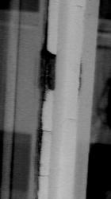
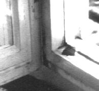

Teil 1: Anstrich - Anforderungen und Eigenschaften
Übliche Bestandteile von Außenanstrichen:
Bindemittel:
Bindemittel verbinden die Farbpigmente untereinander und mit dem Untergrund.
Sie sind verantwortlich für Wasserfestigkeit, Dampfdurchlässigkeit,
Saugfähigkeit, Härte, Elastizität, Staubabweisung, Pflegeanspruch.
Bindemittel bestehen aus Öl, Natur- bzw. synthetischem Kunst-Harz, Gummi, Wachs, Kasein.
Traditionelles und auch heute noch bewährtes, sogar in Kunstharzkompositionen eingesetztes Bindemittel ist:
Leinöl aus Leinsamen
Herkunft des Leinsamens (übliche Herkunft: Argentinien, Schweden, Deutschland) beeinflußt Ölgehalt und Beschaffenheit
der Zusammensetzung mit ungesättigten Fettsäuren.
Leinöl und Leinsamen werden auch für die Ernährung genutzt, natürlichen/naturbelassenen
Leinölprodukten wird auch Heilwirkung gegen Krebs bzw. krebsvorbeugende Wirkung zugesprochen.
Leinölmoleküle sind ca. 50 mal kleiner als Kunstharzmoleküle und ca. 10 mal kleiner als die engsten Passagen im Zellensystem des
Holzes. Dadurch ist reiner Leinölanstrich im Eindringvermögen und der Elastizität jedem Kunstharzanstrich weit überlegen und entspricht
der Grundregel "von hart nach weich". Ganz im Gegensatz zu harzhaltigen Beschichtungen, die die holztypischen Bewegungen unter Temperatur- und
Feuchtebelastung nicht mitmachen können und lieber reißen.
Farbigkeit:
Kaltgepreßt: zitronen- bis dunkelzitronengelb
Heißgepreßt: goldgelb bis bräunlich
Flüssig bis -16 oC, dann Ausflockung, wird bei Erhitzen auf 40 oC wieder klar.
Trocknet durch Sauerstoffaufnahme aus der Luft, am besten bei mäßiger Lichteinwirkung. Tagelange Sonneneinwirkung läßt Leinölanstrich schneller trocknen, nach
10-14 Tagen wird er aber wieder weich bis klebrig. Dadurch können aneinanderstoßende leinölgestrichene Fensterfalze aneinanderkleben, das gefürchtete Blocken.
Um dies zu verhindern gibt es verschiedene Möglichkeiten wie zum Beispiel kontrollierte Distanzhalter, die die zulässige und sinnvolle Falzluft von ca. 1 mm
berücksichtigen oder das Abreiben der Flächen mit Talkum, das dann noch austretendes Öl bindet. Je besser gereinigt das Leinöl ist, umso schneller verläuft die
Trocknung.
Langsame Trocknung = Besserer Anstrich!
Im Dunkeln und unter Luftabschluß: Keine Trocknung.
Das Leinölmolekül besteht aus Glycerin (Alkohol) und verschiedenen Fettsäuren (z. B. Ölsäure, Linolsäure, Linolensäure). Die zumeist "ungesättigten" Fettsäuren haben reaktive „Doppelbindungen“. Dort können sich die Sauerstoffatome anlagern. Dabei verbinden sich drei Fettsäuremoleküle mit einem Glycerinmolekül zu einem Leinölmolekül. Dabei entstehen auch 3 Wassermoleküle (Veresterung). Ein Leinölmolekül ist demnach ein Ester (Säure + Alkohol = Ester + Wasser). Leinöl kann also Sauerstoff aus der Luft aufnehmen und verändert dabei seine phsikalische und chemische Struktur. Die Sauerstoffatome klammern sich mit ihren „Armen“ an zwei reaktive Stellen der ursprünglichen Fettsäuremoleküle, wenn diese sich gegenüber stehen. Das Sauerstoffmolekül setzt sich also zwischen zwei Leinölmoleküle und vernetzt diese miteinander.
Vom anfangs flüssigen Zustand oxidiert das Leinöl über zähflüssige bis klebende Zwischenstufen allmählich in einen trockenen Film, bis alle Leinölmoleküle zum sog. "Linoxynfilm" vernetzt sind. Dabei erhöht das Leinöl durch Sauerstoffaufnahme sein Volumen. Bei zu dickem Schichtauftrag sowie bei Beschichtung auf noch nicht vollständig abgebundenem Malgrund aus vorangegangenem Leinölanstrich kommt es zur Abhebung der von außen abbindenden und dabei durch Sauerstoffaufname sich verdickenden Malschicht vom Malgrund und damit zur gefürchteten "Runzelbildung".
Die besonderen Struktureigenschaften des Leinölanstrichs gewährleisten auch seine hervorragende Bindung am Untergrund. Seine Quellfähigkeit gegenüber Wasser unterstützt dabei auch die Austrocknung bei feuchtem Holzuntergrund, der bei Fenstern durch Innen- bzw. Außenkondensat bzw. sonstige Feuchtequellen wie Beregnung dauernd feuchtebelastet ist.
Probleme des reinen Leinölanstrichs sind seine gegenüber Harz/Öl-Lacken längere Trocknungszeit, im Falle trocknungsbehinderter Einbausituation
(Fensteranschlag, in den Wasser eindringt) seine Wasserquellbarkeit, wodurch Verpilzung eintreten kann (ausgeschlossen bei Bleiweißpigmentierung,
Wasserquellbarkeit ist auch positiv da trocknungsfördernd gegenüber Wasser im Malgrund) und sein schlechter Verlauf bei zu hoher Pigmentierung (Streifenbildung).
Diese Nachteile kann man durch weitere Rezepturzugaben, konstruktive und holzschützende Maßnahmen positiv beeinflussen. Dabei kommt es darauf an, für den
gewählten Einsatzort zutreffend zu rezeptieren und detaillieren. Ein Fußbodenlack muß z.B. eher hart sein, ein bewitterter Fensteranstrich eher elastisch und
diffussionsfähig. Einen Bio- bzw. Synthetik-Universalanstrich kann es also nicht geben!
Aber: Je langsamer die Trocknung, umso höher die Dauerstabilität des Anstrichs!
Naturfarbhersteller benutzen zur Abbindebeschleunigung gerne das
Tungöl (auch Holzöl):
Aus gepressten chin. bzw. südamerikan. walnußähnlichen
Tungbaumsamen. Bei alleiniger Anwendung Versprödungs-/Rißgefahr
erhöht, bildet rißgefährdete Haut, stumpfes Auftrocknen.
Nur in Mischung mit Leinölfirnis sinnvoll. Als Trockenstoff bis 20%
dem Leinölfirnis zugesetzt, ersetzt es Metalltrockenstoffe, beschleunigt
Trocknung, verringert Wasserquellfähigkeit. Max Doerner schreibt dazu
in "Malmaterial und seine Verwendung im Bilde", 12. Auflage: "Chinesisches Holzöl ist vorerst unverwendbar, trotz
verschiedener guter Eigenschaften, wie des guten Durchtrocknens, weil es mit undurchsichtiger
Haut auftrocknet. Außerdem gilbt es stark. Gewerblich wird es für
schnell trocknende, sog. 4-Stunden-Lacke angewendet." Tungöl
bildet harzartig harte und schnell trocknende Oberflächen, die auf
bewitterten Oberflächen je nach Belastungssituation kein unbedingter Vorteil sein müssen.
Halböl:
Je 50% Leinölfirnis und Lösungsmittel (üblich (nach
Dr. Kremer): Shell Sol T-Benzin). Verbessert die Verstreichbarkeit von
Leinölanstrichen. Andere Lösungsmittel sind z.B. Terpentinersatz,
Balsamterpentinöl oder andere hochviskose Öle natürlicher
(wie Rapsöl, Nußöl, Sonnenblumenöl) oder petrochemischer (wie Owatrol der Vosschemie) Herkunft.
Harttrockenöl:
Verkochte Mischung Leinöl und Kopalharz (Harz des ostind. Kopal-Baumes),
früherer Markenname Eburit. Beschleunigt Trocknung, nahezu kein Verspröden.
Verbessert Anstrich nicht, kürzt nur Trockenzeit ab. Bessere Qualität
ergibt sich aber bei Verzicht auf durch solche Hilfsstoffe beschleunigte Trocknung.
Öllack:
Mischung aus Harz und Öl. Verschließt Oberfläche dichter,
wenig bis gar keine Dampfdiffusion. Glänzt mehr als mattere Ölfarben.
Neigt zur Versprödung, Aufschüsselung und Kraquelur.
1->   2->
2->
3-jähriger Alkydharzanstrich auf Holzfenster - Bild 1: Absplitternd,
gerissen und blasenbildend - Bild 2: Zerstörter Leinölkitt, Blasen-/Schollen-/Rißbildung
- Bild 3: Blasenbildung innen
Lacke:
Mischung aus Bindemittel (Harz, Öl), Lösemittel, Pigmenten,
Zusatzstoffe wie Weichmacher, Giftstoffe gegen Holzschädlinge, Füllstoffe.
Alkyd-, Acryl- und Naturharzlacke sperren Oberfläche ab, behindern Wasserdampfdiffusion, für Witterungsbeanspruchung auf thermisch empfindlichen Werkstoffen im Vergleich zu Naturharzlacken zu wenig elastisch, verspröden, durch so entstehende Risse eingedrungenes Wasser staut sich unter Anstrichfilm, dadurch Holzzerstörung.
Der übliche Schadensverlauf führt besonders bei alkydhaltigen Kunstharzlacken nach kurzer Zeit zu dem Holzfaserverlauf folgenden Versprödungsrissen, vor allem an den besonders beanspruchten Wetterschenkelzonen. In die versprödeten und gerissenen Lackschichten dringt durch die Risse kapillar Regenwasser, wird vom Holz im Gesamtquerschnitt aufgenommen und kann über die noch festsitzenden Lackschollen nicht flächig abtrocknen. Dadurch entstehen Wassernester, das betroffene Holz wird zerstört. Holzzerstörende Korrosion tritt aber auch bei den Acrylaten auf, die zwar mehr "ventilieren" sollen, dies aber auch nicht im erforderlichen Umfang leisten. Ihre mattere, krisseligere Oberfläche wirkt als Schmutzfänger und hat Folgen (biogene Besiedlung, Feuchtestau) für das darunterliegende Holz.
Großes Problem ist die mit jedem Instandhaltungsanstrich zunehmende Abdichtung der Holzoberfläche. Da vorwiegend außen nachgestrichen wird, entsteht eine dort zunehmende Dampfdichtheit. Folglich staut sich Dampf/Kondensat unter dem Außenanstrich und zerstört dort das Holz.
Manche Acrylharz-Wasserlacke sind weniger blockfest, d.h. die Fensterfalze kleben trotz anscheinender Durchtrocknung dennoch zusammen. Wasserlacke besitzen zwar weniger Lösemittel, dafür aber andere problematische Zusätze (Entschäumer, Biozide,...). Sie sind sehr schlecht wieder zu entfernen und gegen harmlosere Alkali-Abbeizmittel resistent. Aggressivere lösemittelhaltige Abbeizmittel oder thermisch-/mechanische Entlackung müssen dann eingesetzt werden.
Klassifikation nach Zusammensetzung (z.B. Alkydharzlack), Lösemittel (z.B. Wasserlack), Anstrichaufbau (z.B. Decklack), Verwendungszweck (z.B. Fußbodenlack), nach Anwendungseigenschaften (z.B. Klarlack).
Vorsicht: Es gibt sog. Naturfarbhersteller, die nebenbei Naturharzester in die angeblich reine Leinölfarbe reinmixen und damit deren eigentlichen Vorteile wieder aufgeben. Merke: Es ist kein himmelweiter Unterschied zwischen Kunst- und Naturharz im technsichen Sinn, prüfen Sie sorgfältig die Produktdeklaration und das DIN-Sicherheits-Datenblatt auf Ihnen merkwürdig vorkommende Zutaten.
Im Unterschied zu reinen Ölfarben sind Harz-Lacke stark schichtenbildend.
Reparaturanstriche lassen sich dann nicht "beistreichen", sondern
setzen erhöhten Aufwand bei dem Anschliff der unterschiedlich abgeplatzten/losen Schichten der Altanstriche voraus.
Lösemittel:
Aber: Zu viel Lösemittelbeigabe, der Weg des bequemen
Pinslers,
seine Brühe am kraftsparendsten zu verstreichen, ist der
sicherste
Weg, den Anstrich zu verderben. Wird die Malschicht durch
Lösemittelüberschuß
zu dünn verstreichbar, ist seine Schutzwirkung und
Stabilität
dahin, er wird dann leichter craquelieren und außen nach
weniger
als einem Jahr aufreißen und abblättern. Am besten also ohne Lösemittel!
Möglich:
Künstliche organische Lösungsmittel (als
Terpentinersatz wie
Testbenzin (undeklarierte Verunreinigungen mit Benzol, Toluol, Xylol),
und Wundbenzin, chlorierte Kohlenwasserstoffe,
Nitroverdünner). Problem:
Gesundheitsgefahr, Veränderung Blut, Herz- und
Kreislaufbeschwerden,
Störung Nervensystem. Lösemittelarme,
wasserverdünnbare
Lacke enthalten stärkere Lösemittel wie Butylglykol,
reizt Augen,
Schleimhäute, verändert evtl. Erbgut.
Pflanzliche Lösemittel/Terpene: Terpentinöle, Balsamterpentinöl (aus Nadelbaumharz), Citrusschalenöl. Problem: Bei den früher üblichen, stark verunreinigten natürlichen Lösemitteln bestand erhöhte Gesundheitsgefahr (Malerkrätze) wegen Beimengungen von Delta-3-Caren. Besser, und heute bei Naturfarbherstellern üblich: Doppelt rektifiziertes (destilliertes) und damit besonders reines Terpentinöl, besonders gereinigte und praktisch Caren-freie Naturöle. Etwas teurer im Vergleich zu Benzin-Lösemitteln (Terpentinersatz). Wichtig: Das doppelt rektifizierte Balsamterpentinöl ist bei weitem nicht das technisch beste Naturprodukt. Die Rektifizierung ist erforderlich, um unreine Produkte zu verbessern. Besser, und in jeder Hinsicht empfehlenswert ist Balsamterpentinöl aus Lebendharzung (z.B. aus Portugal), das z.B. in Bezug auf das problematische Delta-3-Caren erheblich sauberer ist und insgesamt bessere technische Eigenschaften aufweist.
Andere Lösungsmittel sind z.B. weitere hochviskose
Öle natürlicher (wie Rapsöl,
Nußöl,
Sonnenblumenöl, Holzöl/Tungöl) oder
petrochemischer Herkunft.
Aus gesundheitlichen Gründen bei Wahl petrochemischer
Produktlinie
empfohlen, keine Gefahr von Hautreizung: iso-Dodekan,
Siedegrenz-Benzin,
iso-Aliphate (Kohlenwasserstoffe aus Erdöl-Destillation, denen
schädliche
Aromaten entzogen wurden, Restgehalt unter 0,01%, Vergleich Testbenzin:
bis zu 19%), verwendet in Schweden, auch von üblichen
Naturfarbherstellern,
milder als Terpene. Problem: Löst Naturharze nur gering,
dafür
Zugabe von Naturöl-Lösemitteln erforderlich.
Der Zeitschrift Ökotest war zu entnehmen:
"Terpentinöle sollten - so die Kritiker - Ekzeme, die sogenannte Malerkrätze, hervorrufen. Diese Möglichkeit besteht tatsächlich. Aber nur, wenn die Terpentine die Verunreinigung Delta-3-Caren enthalten. Die Naturfarbenhersteller achten jedoch genau darauf, daß diese Verunreinigung in ihren Lacken nicht vorkommt. Eine geeignete Rohstoffauswahl reduziert das Risiko unter 0,01 Prozent.
Auch das natürliche Zitrusschalenöl kam bei der Negativkampagne nicht gut weg. Der Bestandteil p-Menthadien-1,8 soll im Tierversuch Krebs auslösen. Diese Wirkung bezieht sich allerdings auf chemisch hergestelltes p-Menthadien-1,8, das neben unschädlichen d-Limonen auch die umstrittenen 1-Limonen enthält. Das natürliche Zitrusschalenöl enthält dagegen fast nur d-Limonen, das auch ein wesentlicher Bestandteil von Orangensaft ist.
Testbenzine, die ebenfalls von einigen Naturfarbenherstellern als Lösemittel eingesetzt werden, wurden als smogbildend und krebsverdächtig eingestuft. Doch dieses Urteil trifft lediglich die Aromaten in diesen Benzinen, die zwar bei manchen handelsüblichen Produkten bis zu 40 Prozent ausmachen können. Die meisten Naturfarbenhersteller reinigen jedoch ihre Testbenzine durch Destillation von den Aromaten."
Zur Farbentfernung und Ablösung von Lacken und Ölanstrichen gibt es als Abbeizmittel grundsätzlich Alkalilauge (Natronlauge, sehr billig, starke Durchfeuchtung des Holzes, Trockenzeit, nicht für alle Anstriche wirksam, muß neutralsisiert werden, Gefahr der Salzeinwanderung in Holz, verfärbt manche Holzsorten), CKW-haltige Abbeizer (mit gesundheitsgefährdendem Dichlormethan, hohe Anforderungen an Arbeitsschutz) und weitere Rezepte der Lösemittelchemie (Benzylalkohol, N-Methyl-Pyrrolidon, Ester, je nach Konzentration mehr oder weniger hohe Anforderungen an Arbeitsschutz, je höher Prozeßtemperatur und Flüssigkeitsanteil, umso mehr Beanspruchung der Holzteile).
Bei Anwendung von Lösemitteln grundsätzlich ausreichend lüften. Atem- und Hautschutz nach Herstellervorschrift.
Trockenstoffe/Sikkative
T. wirken als Katalysatoren, werden Ölen und ölhaltigen Anstrichmitteln
für bessere/schnellere Trocknung zugesetzt. Möglich: synthetische Schwermetallseifen, Harze und besondere Öle.
Metallseifen früher aus PbO-Bleiglätte (gem. DIN 55932, April
1974, wird bei Firniskochen zu Bleiseife, giftig, bewirkt Verharzung des
Öls, fördert die Durchtrocknung von innen her, kennzeichnungspflichtig
mit Totenkopf, nur bei Anforderung/Bestätigung Denkmalamt lieferbar),
dadurch definierte Trocknung in 24 (PbO-Bleiglätte) / 36 (Kobaltoktoat)
Stunden, bei übermäßiger Zugabe Trocknungsverzögerung.
In heutigen Trockenstoffen werden die giftigeren Blei- und Bariumseifen
durch Zirkonium-, Kobalt- und Eisenverbindungen ersetzt.
Bleiweiß fördert die Trocknung von innen heraus, Kobaltoktoat
(verseiftes Kobaltsalz, weniger toxisch als Bleiweiß) von der Oberfläche her.
Heute üblicher Trockenstoff für Leinölfirnis ca. 0,5% Kobaltoktoat, auch Calcium- und Zirkoniumoktoat
(Livos-Naturfarben) oder auf Basis von Mangan, das die gleichmäßige Durchtrocknung fördert.
Je weniger Trockenstoff, umso längere Trocknung aber auch Haltbarkeit
im Außenbereich! Zu viel Trockenstoff ergibt Reissen, Runzelbildung und Kleben des Anstrichs.
Weitere Trockenstoffe: Bleinaphtenat und Kalziumnaphtenat (in schwed. Ölfarben),
Metallsalze, Mischungen aus Mangan, Barium, Kobalt (Kobalt+Kobaltsalze+Harze)
und Zirkonium, früher Blei, Tungöl als Ersatz von 20% Leinölfirnis.
Wichtig für eine gute Ölfarbe ist ein ausgewogenes Verhältnis
von Trockenstoffen, die sowohl von innen als auch von außen her die Trocknung fördern.
Pigmente:
Heute:
- Weißpigmente Titanweiß (aus Rutil, Mineral, chem. verwandt mit Tonerde)
- hochdeckendes synthetisches Titandioxid, als mit Leinöl angeriebene
Paste erhältlich, ergibt opake Oberfläche
- Zinkweiß (Handelsname Zinkweiß Weißsiegel)
- durchsichtig wirkendes Zinkoxid, leicht bleihaltig, vergilbt leicht,
auch in weniger vergilbungsgefährdeter Nußöl-Paste erhältlich.
Von Fachleuten empfohlen: Weißpigment aus je 50% Titan- und Zinkweißpaste, soweit kein Bleiweiß. Um Vergilbungsgefahr weiter zu vermindern (wenn aus gestalterischen Gründen gefordert) Zinkweiß : Titanweiß 1: 3.
Problem: Mikroorganismen können auf Farben wachsen, deswegen ist vermehrte Wartung (kommt nicht von Warten) der
Anstrichoberflächen für bessere Dauerstabilität mittels Reinigung und Bindemittelnachversorgung unabdingbar.
Abtönung: Erdfarben wie Terra di siena natur oder gebrannt (ockrig/braun); Rußschwarz (grau).
Wichtig: Leinölfarben (und andere) unterscheiden sich durchaus hinsichtlich ihrer Pigmentmenge, d.h. Qualitätsfarben
haben mehr Pigmentanteil je Liter Fertigfarbe. Man kann die Unterschiede durch Abfragen des Litergewichts einschätzen,
gute Farben wiegen mehr. Die Menge des in einer Bindemittelflüssigkeit einbringbaren Pigments hängt auch von der
Mahlfeinheit, Aufmahlmethode und Einbbringmethode/Einarbeitung der Pigmente ab. Leinölfarbe verschiedener Hersteller unterscheiden sich hier wesentlich.
Holzschutzmittel
Übliche Holzschutzmittel vergiften das Holz gegen den Angriff
von holzzerstörenden, da sich von Holzinhaltsstoffen ernährenden
Insekten (Anobien, Hausbock, ...) und Pilzen (Bläuepilz, Hausschwamm,
...). Dies gelingt durch die Verwendung von für diese Lebewesen giftigen
Stoffen. Da diese Stoffe (Lindan, Borpräparate, ...) auch für den menschlichen Organismus bzw. nützliche Tiere (Bienen,
Fledermäuse, Haustiere, Nutzvieh, ...) giftig sind, sollten giftige Holzschutzmittel
so wenig wie möglich, besser gar nicht verwendet werden.
Früher wurde Bleiweißfarbe als wirksames Holzschutzmittel eingesetzt,
das ist am Baudenkmal auch heute noch möglich.
Technische Eigenschaften der Anstriche
Trockenzeit:
Die Trocknung erfolgt in drei Stufen:
1. Trocknung Lösemittel durch Verdunstung der flüchtigen Bestandteile.
2. Abbau der Klebrigkeit durch Antrocknung der Oberfläche.
3. Durchtrocknung der Anstrichschicht.
Trockenzeit abhängig von Anteil Harz ( Harze trocknen physikalisch durch Abgabe Lösungsmittel, z.B. Kopalharz, Kolophoniumglyzerinester als Ersatz für Kopalharz oder Dammarharz, Alkydharz), Hartöl, Trockenstoffe, Lösungsmittel, Öl (Öle trocknen chemisch durch Sauerstoffaufnahme), Ölart, Schichtdicke, Umgebungsbedingungen wie Licht, Feuchte, Temperatur, Untergrund.
Fette Farben (weniger Harz, mehr Öl) trocknen länger auf als magere (hoher Harzanteil ca. 30%, kaum dampdiffussionsoffen, versprödungsempfindlich). Bleiweißfarben haben besonders günstigen Trocknungsverlauf, da die sich mit dem Leinöl chemisch bildenden Bleiseifen als Trockenstoff wirken (in geringerem Ausmaß auch bei Zinkweiß). Sie sind allerdings nur noch für nachgewiesenen (Bestätigung Denkmalbehörde) Bedarf für Denkmalrestaurierungen frei erhältlich.
Ohne Harze/Harttrockenöl ca. 4 - 7, je nach Rezeptur auch bedeutend mehr Tage Trockenzeit bis zur vollständigen Durchtrocknung der Schicht. Bei Zugabe Harttrockenöl ca. 1 Tag Trockenzeit, bei Alkydharzzugabe 4 - 6 Stunden Trockenzeit. Bei gelungener Rezeptierung mit den verschieden wirkenden Trockenstoffen kann die Trocknung auch in ca. 24 Stunden gelingen.
Möglichst dünne Anstriche auftragen, gut verschlichten - nicht zu viel Lösemittel!, führt zu besserer Trocknung und Beständigkeit. "Quäle den Pinsel und nicht die Farbe"!
Bei zu dicken Schichtstärken bzw. ungeduldigem Anstrichaufbau, ein häufiges Problem unerfahrener Anwender, erscheint der Anstrich ausreichend trocken für den Folgeanstrich im vorgeschriebenen Schichtaufbau, ist aber noch nicht ausreichend durchoxidiert. Ein nur von der Oberfläche her antrocknender Leinölfilm (Trockenstoff Kobaltoktoat) läßt sich mit der Fingekuppe über dem noch nicht durchgetrockneten Unterbau verschieben, ohne am Finger anzuhaften. Gerade die Grundierung wird in ihrem Trocknungszustand oft überschätzt. Sie dringt tief ins Holz ein, oxidiert dadurch aber auch langsamer. Die Nachfolgeanstriche blockieren dann die vollständige Durchtrocknung. Unangenehme Folge: Bei späterer Erwärmung (Sommer) erweicht der Anstrich, es kommt zur Blockung (Verkleben der Fensterfalze).
Einzige Abhilfe: Sehr dünnes Ausstreichen der Farbschichten, ausreichend bemessene Trockenzeiten, gute Trockenstoffrezeptur. Im Einzelfall und abhängig auch von den Umgebungsbedingungen mag das bis zu mehreren Tagen Trockenzeit für die einzelnen Anstrichschichten gehen.
Soweit der Endanstrich besonders lange klebrig bleibt, weist das auf ungenügende Durchtrocknung der darunter liegenden Schichten hin. Dafür kann auch zu hohe Holzfeuchte verantwortlich sein. Wichtig: Wassergelöste Holzschutzmittel können den Trocknungsprozeß behindern. Dann wird sorgfältige Prüfung der Holzfeuchte erforderlich, um unliebsame Folgen aus zu hoher Feuchte zu vermeiden.
Eher abzuraten ist auch von einem Anstrich von Leinölfarben auf harzhaltigen Lacken, die ja bei älteren Fenstern ihrerseits auf originalen Leinölanstrichen sitzen. Durch die neuen Leinölfarben können die unteren Schichten angelöst werden, durch Risse in den Lackschichten bis in den Originalanstrich hinein! Das ist dann natürlich kein geeigneter Untergrund für einen neuen festsitzenden und dauerstabilen Leinölanstrich, so geeignet er auch sein mag auf Holzfenstern. In so einem Fall muß man auch jeden Fall sorgfältigst bemustern, wie sich das Renoviersystem über längere Zeit zeigt, und sonst eben alle Altanstriche abnehmen. Dafür gibt es beährte Systeme, die eben nicht zum Kaputtschleifen der historischen Holzprofile führen, wie so oft zu sehen. Wenn man diese Ratschläge nicht beherzigt, droht fast unweigerlich das schon angesprochene "Blocken", also Verkleben udn Ablösen der schlecht abgebundenen und nur ungenügend anhaftenden Anstrichschichten.
Weitere Gefahr bei zu dickem Schichtauftrag: Runzelschichtbildung (s.o.).
Problem: Da sich reine Ölfarben vergleichsweise schwer verstreichen lassen, erfolgt oft unkontrollierte Zugabe von Lösungsmittel/Verdünnung. Damit wird die Farbe im Bindemittel- und Pigmentgehalt ausgemagert und die Dauerbeständigkeit schwerwiegend beeinträchtigt. Erschwerend hinzukommen kann das Abheben von Leinölhäuten bei angebrochenen Farbtöpfen. Die entnommene Ölmenge muß als frisches Öl wieder zugegeben werden, sonst ist der Pigmentanteil zu hoch. Die ausgemagerte Farbe wird dann zu schnell aufgebrochen, gerade bei witterungsbeanspruchten Flächen.
Wichtig: Schnell trocknende Anstriche dringen wegen ihrer
schnellen Abbindung weniger tief in den Untergrund ein als langsamer trocknende
Anstriche. Folge: Geringere Untergrundhaftung, schnelleres Abwittern,
höhere Oberflächenbeanspruchung bei Bewitterung der schnell aufgetrockneten Anstrichschicht.
Dampfdiffusion:
Leinölmoleküle sind ca. 50mal kleiner als Kunststoffpolymere
in Kunststoffarben (Alkyd-/Acrylharz). Harzbestandteile behindern Wasserdampfdiffusion
(z.B. aus Innenraum durch Anstrichfehlstellen nach außen, aus eingedrungenem
Regenwasser in Holzoberfläche, aus Kondensation, aus
natürlicher Holzfeuchte), bilden wasser- und wasserdampfdichte Schicht (Bootslack).
Gerade bei Fensterkonstruktionen muß immer mit
Wasserbelastung durch Oberflächenverletzungen und Dampfdruck von innen gerechnet werden.
Die nachfolgende Verdunstung kann nur durch dampfdiffusionsfähige Ölanstriche schadensfrei erfolgen.
Auf Ölfarben perlen Wassertropfen (hohe Oberflächenspannung) ab, Wasserdampf kann staufrei durchwandern.
Unter Kunstharzfarben verstärkt Bildung von Stauwasserzonen und Wassernester, darauf Blasenbildung, gefüllt mit Wasser,
nachfolgend Fäule. Problemsteigerung bei jedem Instandhaltungsanstrich über alte Anstrichreste.
UV-Schutz:
Holz vergraut durch die energiereiche UV-Einwirkung und wird dadurch mittel- bis langfristig zerstört.
Schutz: Ausreichende Pigmentierung mit Farbstoffen. Lasur ist kein ausreichender UV-Schutz.
Dunkle Farben lassen Holz bis 80 oC aufheizen, es reißt dadurch eher auf, anstrichzerstörender Harzaustritt.
Beste Schutzwirkung erforderlich für von innen und
außen sowie mechanisch beanspruchte Fensterkonstruktion mit Anspruch an
Dichtwirkung (Maßhaltigkeit). Besondere Sorgfalt ist bei Reparaturanstrichen erforderlich.
Zusammenfassung:
Nur ein möglichst heller, also weißer Ölfarbanstrich ohne bzw. mit möglichst wenig Harzanteil und mit geeigneter
Pigmentzusammensetzung, aus technischer Sicht am besten Bleiweiß, bietet einen
dauerhaft zufriedenstellenden Schutz auf bewitterten maßhaltigen Holzkonstruktionen.
Im geschützten Innenbereich sieht das selbstverständlich anders aus. Hier ist gegen stabil vergütete Lackfarben nicht viel
einzuwenden, die dann im mechanisch/chemisch beanspruchten Bereich auch recht
dauerhaft die Fläche schützen - besser als die weicheren Ölfarben.
Dennoch gibt es viele sog. Handwerker im Malergewerk, die in Ausschreibungen geforderte Ölfarbanstriche für Außeneinsatz bzw. historische Flächen oder Maltechniken durch minderwertige, aber schneller verarbeitbare und im Einkaufspreis billigere Lackierungen (gute Leinölfirnisfarbe 1Liter bis ca. EUR 30.--, Lackfarbe ca. EUR 7 - 12.--, Naturfarblack ca. EUR 20.--, gering pigmentierter Leinölfirnis als Grundierung ca. EUR 8.--) ersetzen oder mit Lösungsmittel- bzw. Verdünnerzugabe verschneiden. Die Vermeidung von Originalgebinden auf der Baustelle erleichtert derartige Manipulationen.
Durch diesen häufig anzutreffenden und für den Laien schwer aufzudeckenden Betrug wird der Bauherr bewußt geschädigt, da derartige Anstriche nicht nur kurzlebig sind und frühzeitig reißen, sondern durch Feuchtestau auch das Holz schädigen und spätere Instandsetzungen nachhaltig erschweren.
Dabei reicht ein Liter Ölfarbe für ca. 14 qm Holzoberfläche. Beispiel: An einem einflügeligen Verbundfenster 1,40/1,00m, Holzoberfläche ca. 1,5 qm, dreilagiger Anstrich mit Grundierung, Materialanteil von ca. DM 3,50 (Alkydharz-Billiglack) - DM 10.--(Ölfarben-Qualitätsanstrich) - höhere Ergiebigkeit Ölfarbe vernachlässigt.
Literaturauszüge zum Thema "Unterschiede zwischen Farbsystemen":
aus: Ziesemann u.a.: Natürliche Farben, Anstriche und Verputze selber herstellen, AT Verlag, Aarau, Schweiz, 1996
"Die heute gebräuchlichen Anstriche und Verputze schaden oft der Umwelt und der Gesundheit. Eine sinnvolle Alternative bieten traditionelle zum Teil jahrhundertealte Rezepturen. Sie ergeben ebenso haltbare oder langlebigere Resultate als die herkömmlichen, topffertigen Produkte, sie sind einfach und wirksam in der Verarbeitung und vor allem schadstofffrei." (Buchdeckeltext Rückseite)
"Für Fensteranstriche ist es ganz besonders wichtig, eine dampfoffene oder diffusionsfähige Farbe zu wählen, da, wie gesagt, in diesem Bereich mit einem Dampfdurchgang zu rechnen ist. Auch durch Ritzen oder kleinste Verletzungen kann Feuchtigkeit in das Fensterholz eindringen. Kann diese nicht wieder verdunsten, kommt es zu Holzfäule.
Es ist eine unumstrittene Tatsache, dass mit der Einführung der Kunstharzfarben die Holzfenster in den schlechten Ruf mangelnder Haltbarkeit kamen. Schuld waren jedoch die Kunstharzfarben, mit denen dichte Versiegelungen vorgenommen wurden, die zur Bildung von Stauwasserzonen und Wassernestern führten. Es gibt manchmal kleine Blasen im Anstrich, aus denen nach dem Anstechen regelrecht Wasser heraustropft. Dass hier das Holz dem schnellen Verfall geweiht ist, leuchtet ein.
Natürliche Ölfarben sind hier die sinnvollste Alternative, da Öle einen ganz anderen Aufbau als Kunstharzfarben aufweisen. Bedingt durch ihre völlig andere Molekülgrösse und ihren "lockeren" inneren Aufbau, lassen sie nämlich Wasserdampfmoleküle hindurch. Fliessendes Wasser hingegen, der Tropfen mit seiner hohen Oberflächenspannung also, wird abgewiesen. Regen perlt also von einer Ölfarbe ab, innere Feuchtigkeit kann jedoch aus dem Holz herausdampfen. Dieses geniale Prinzip erlaubt es geölten und durch Ölfolgebehandlungen gepflegten Fenstern, leicht einmal hundert Jahre oder auch älter zu werden." (S. 107)
"Anders als Kunstharzfarben werden Ölfarben nie in ganzen Schichten herunterblättern, sondern ihre Bindung wird langsam zerstört. Sie zerfallen von aussen nach innen. Bemerkbar macht sich das dadurch, dass sie irgendwann ihren Glanz verlieren und abzufärben beginnen. Nun ist es Zeit für einen Wiederholungsanstrich. Gereinigte Ölfarben dürfen immer wieder ohne Probleme mit Ölfarben überstrichen werden, es ist nicht nötig, sie zuvor zu entfernen. Wird ein Ölanstrich regelmässig gepflegt, kann er allerdings fast unbegrenzt halten. Die Pflege besteht darin, dass bei etwa jedem zehnten Fensterputzen oder je einmal im Frühjahr und im Herbst die aussen sichtbaren und damit der Witterung ausgesetzten Rahmen und Flügel mit einem ölhaltigen Lappen nachgeölt werden. In diesem Fall sollte es sich um eine fette, standölreiche Mischung handeln." (S. 108)
"Fettere, also ölhaltigere Lacke trocknen langsamer als magere Anstriche. [...] Je langsamer ein Ölanstrich trocknet, desto witterungsbeständiger ist er allerdings auch. [...] Die Witterungsbeständigkeit einer Ölfarbe oder eines Lackes ist in erster Linie von der Höhe des Ölgehalts und der Art des untergemischten Harzes abhängig. [...] Als Bootslacke wurden lange Zeit magere Ölfarben, das heißt Farben mit einem geringen Holzölanteil und einem hohen Harzanteil mit gutem Ergebnis angewendet. Dass in diesem fall die Dampfoffenheit reduziert, nach Möglichkeit sogar ganz beseitigt wird, liegt auf der Hand." (S. 102)
"Wenn es darum geht, eine Farbe einzusetzen, die Feuchtigkeit im gasförmigen Zustand hindurchlässt, ist man mit Ölfarben grundsätzlich gut bedient. Diese günstige Eigenschaften besitzen natürliche Ölfarben dank ihres inneren Aufbaus, ihrer molekularen Struktur. Leinölmoleküle sind auch nach dem Trocknen im Schnitt fast fünfzigmal kleiner als Kunststoffpolymerisate. Wenn bei Kunststoffanstrichen - und hierzu gehören auch die sogenannten "Wasserlacke" - nachgesagt wird, sie seien dampfoffen, gilt das vermutlich nur für den frischen Anstrich. Die über sehr lange Zeit fortschreitende Polymerisation oder Vernetzung der Moleküle führt langfristig zu einer dampfdichten Versiegelung. Der Dampfdurchgangskoeffizient wird wesentlich vom Harzanteil, der abdichtet, bestimmt." (S. 103)
"Links: Acryllack blättert ab, die Schichten sind wasserdampfdicht. Rechts: Ölfarben verwittern langsam, der Dampfaustausch ist jederzeit gewährleistet." (Bildunterschrift, S. 101)
Karl Apel, Bernhard Hantschke: Oberflächenbehandlung von Holzfenstern: Konstruktion, Anstrich, Wartung, Deutsche Verlags-Anstalt, Stuttgart, 1982 (Karl Apel, geb. 1922, Maler- und Lackierermeister, eh. Chefredakteur "Das Deutsche Malerblatt", Dipl.-Ing. Bernhard Hantschke, geb. 1934, Maler- und Lackierermeister, ö.b.u.v. Sachverständiger IHK Münster, eh. Leiter Entwicklungslabor Glasurit GmbH):
"Fehlendes Wissen über Dichtungen und Dichtstoffe, Glashalteleisten auf der Aussenseite, Mängel zwischen Fenster und Bauanschluß, immer größer werdende Maße der Fenster ohne die richtige Querschnittsdimensionen das Holzes, Nichtbeachtung physikalischer Grundsatzdaten und letztlich auch der Übergang von Ölfarben auf Alkydharzfarben beim Anstrich führten zu Schäden, die dem Image des Holzfensters damals schwer geschadet haben. Von vielen wurde das Holzfenster abgeschrieben." (S. 15)
Dipl.-Ing. Bernhard Hantschke, Dipl.-Ing. Christian Hantschke: Lacke und Farben am Bau, Erstanstrich und Werterhaltung, Eine Einführung für Maler, Architekten, Gutachter, Hirzel Verlag, Stuttgart, Leipzig 1998:
"Neben den Daten zur Wasserdampfdiffusion und zum physikalischen Holzschutz, der starke Auffeuchtung verhindern soll, muß die Dauerelastizität als Reservestabilisator das Anstrichsystem haltbar gewährleisten." (S. 111)
"Lacke und Kunstharze sind als versprödend und mangelhaft elastisch dargestellt. Solche Beschichtungen können, da sie sehr dicht sind, zur Zerstörung des Holzwerks führen." (S. 177)
"Alterung
von Anstrichen wirkt sich in einem Nachlassen der Dehnbarkeit des Films
durch Einwirkung von Luft, Licht, Wärme, Feuchte und bei Holz
durch Bewegung des Untergrundes aus. Bei Alkydharzfarben ergibt sich eine
langsam fortschreitende Versprödung, die zu Rißbildung,
Abblättern und anderen Anstrichschäden führen kann. Eine
Bestimmung des Beginns der A. ist kaum möglich, sie beginnt praktisch bereits
mit der Aushärtung des Alkydharzfilms. Stark wechselnde
Temperaturen, Einfluß des UV-Lichts und Feuchtigkeit können die A. beschleunigen." (S. 182)
"Kreiden
[...] Die Kreidung ist bei Alkydharzsystemen stärker als bei
wasserverdünnbaren Acrylharzanstrichen." (S. 201)
"Versprödungen
Unter V. versteht man die trockene Brüchigkeit des Films, die
stellenweise zum Abplatzen führt. In der Regel ist eine V. ein Resultat
langjährig bewitterter Alkydharzdeckanstriche bzw. Alkydharzlasuren." (S. 213)
"Vergilbungen
Unter V. ist eine unerwünschte Farbtonveränderung meist weißer,
hell getönter, aber auch farbiger hoch- und seidenglänzender
Lackierungen zu verstehen. Vergilbungseinflüsse sind Dunkelheit bzw.
diffuses Licht bei lösemittelgelösten Alkydharzlackfarben, Wärmeeinfluß
bei Heizkörperlackierungen und Einflüsse aus der
Umgebung. Beispiele hierfür sind Ammoniakabdünstungen aus
Dispersionsfarbenanstrichen bzw. Fußbodenverlegearbeiten, die frische Lackierungen ganz
oder teilweise verfärben können." (S. 213)
"Ventilationsverhalten
Insbesondere für die Instandhaltungsarbeiten an Altfenstern werden zweckmäßig ventilierende Anstrichsysteme eingesetzt.
Diese Anstrichsysteme [...] zeigen in der Durchlässigkeit gegenüber normalen Anstrichsystemen, bezogen auf einen Nullwert und eine bestimmte Schichtdicke,
günstigeres ventilierendes Verhalten, d.h. höhere Durchlässigkeit von Feuchtigkeit, insbesondere im Vergleich zu hochglänzenden Aufbauten auf Alkydharzbasis".
(S. 212)
Auszüge aus Vergleichstabellen betr. "Bio-Natur" [gemeint Basis Naturöl], und "Basis Alkydharz, lösemittelhaltig" [Nur Auswahl der haltbarkeitsrelevanten Werte]:
"Deckende Anstrichsysteme (+: besser, -: schlechter, = : gleiche Bewertung)
Tabelle 29: Vergleich der Verarbeitungsdaten:
Eindringtiefe: Bio-Natur + / Alkydharz: -
Tabelle 31: Vergleich des Gebrauchswertes
gegen Benutzung: Bio-Natur: ++ / Alkydharz: +
gegen Korrosion: Bio-Natur: + / Alkydharz: -
gegen Verfärbungen, Durchschlagen Holzinhaltsstoffe: Bio-Natur: + / Alkydharz: -
Tabelle 32: Vergleich der Haltbarkeit:
Alterungsbeständigkeit: Bio-Natur + / Alkydharz: -
Elastizität: Bio-Natur - / Alkydharz: --
UV-Schutz: Bio-Natur += / Alkydharz: -
Diffusion (Maßhaltigkeit): Bio-Natur + / Alkydharz: -
Blockfestigkeit: Bio-Natur += / Alkydharz: +="
(S. 162, 163)
Ibau Planungsinformationen 3.4.01: Holzfenster: Da ist der Lack noch lange nicht ab (Fraunhofer-Institut für Holzforschung, Braunschweig)
"... Möglichst wirksam und lange müssen Lacke das Holz vor Sonne und Regen schützen - und das bei wechselnden Temperaturen.
Deckend pigmentierte Lacke erfüllen diese Forderung nur zwei bis fünf Jahre. ... Transparente Lacke für Außenanstriche werden noch gar nicht auf dem Markt angeboten, denn sie weisen einen entscheidenden Nachteil auf: Die Sonnenstrahlen durchdringen den Lack [und zerstören den Holzbestandteil Lignin, der dann von Regen ausgewaschen wird]. Der Lack haftet nicht mehr am Untergrund, löst sich schließlich vom Holz ab und ein neuer Schutzanstrich wird fällig."
Mein Tip:
Lassen Sie sich nichts vormachen von völlig haltlosen Versprechungen rund um den Lack.
Und wenn etwas allgemein anerkannt sein soll, dann gerade nicht, daß Kunstharzfarbe - außer schnellerer Trocknung - besser für Holzanstriche außen wäre. Das belegen neben erfahrenen Handwerkern auch die obigen Literaturzitate von ausgewiesenen Fachleuten. Lassen Sie sich nicht blenden von der schnellen Trocknung. Sie bezahlen es zu teuer durch ständig erforderlichen Unterhaltsaufwand (was für manche Maler natürlich eine feine Sache ist.
Auch wenn der Anstrich noch so kaputt ist nach einem Jahr, irgendein Schwachverständiger behauptet sicher, das entspricht den Regeln der Technik, daß Sie ständig instandhalten müssen. Und beruft sich auf das Merkblatt Nr. 18 "Beschichtungen auf maßhaltigen Außenbauteilen aus Holz, insbesondere Fenstern und Außentüren", Hrsg.: Bundesverband Farbe und Sachwertschutz e.V.. In diesem Verein hocken maßgeblich die Industriehersteller von Kunstharzfarben und bewachen ihre Interessen. Aber nicht die der Endverbraucher (siehe Holzschutzmittelskandal). Holzauge, sei wachsam.
Tipp: Machen Sie Ihrem Planer von Anfang an klar, daß er bei der Ausschreibung von Holzanstrichen aufpassen muß. Sonst sitzt er mit seiner 5jährigen Gewährleistung schnell als Einziger da, wenn es um die Reparatur der falsch gestrichenen Wetterschenkel geht. Die Maler haben hier nämlich grundsätzlich alle Tricks drauf - im Unterschied zur Planungslusche zu Honorarzone 0 Mindestsatz.
Weiter Teil 3: Ölfarbanstriche auf alten und neuen Fenstern - zu Grundregeln und Arbeitsgängen ...